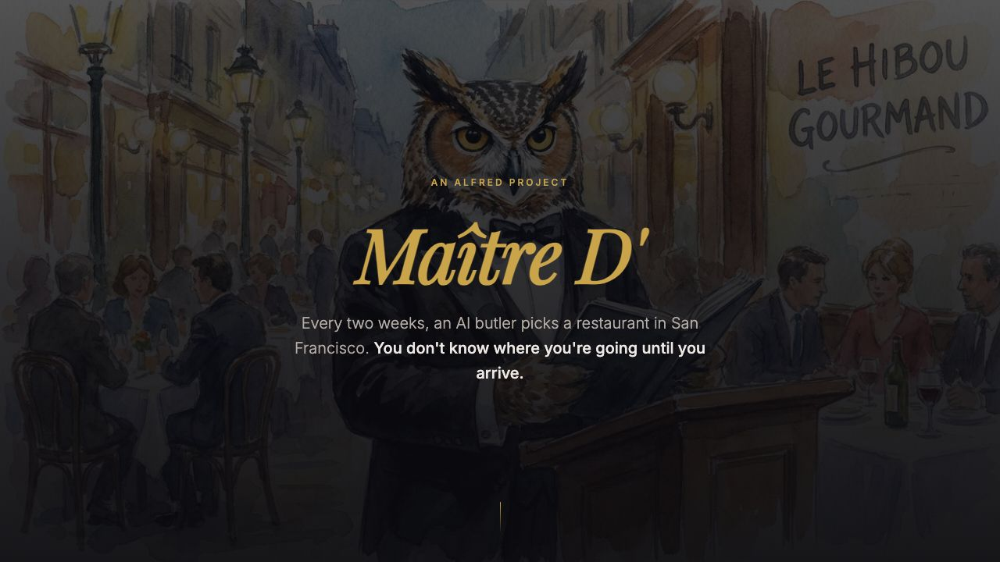
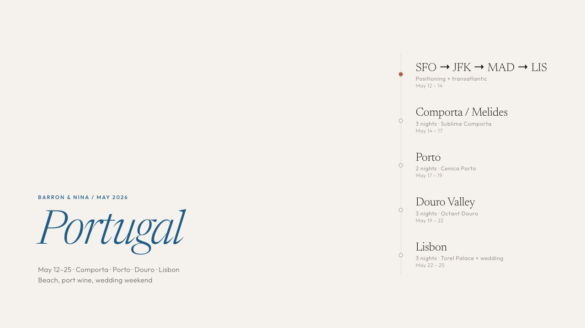
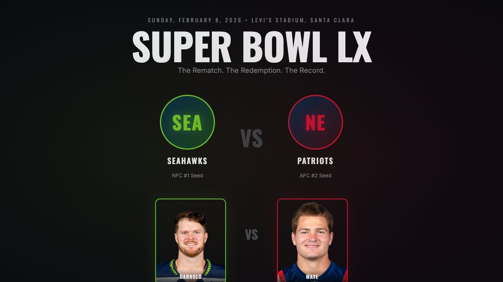
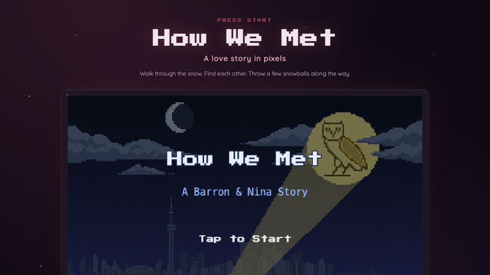
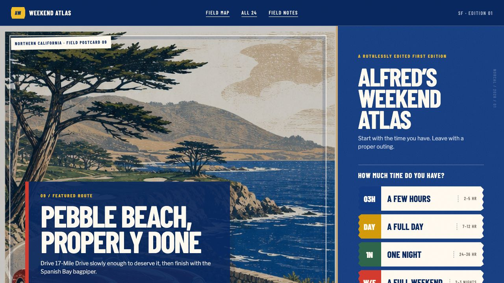
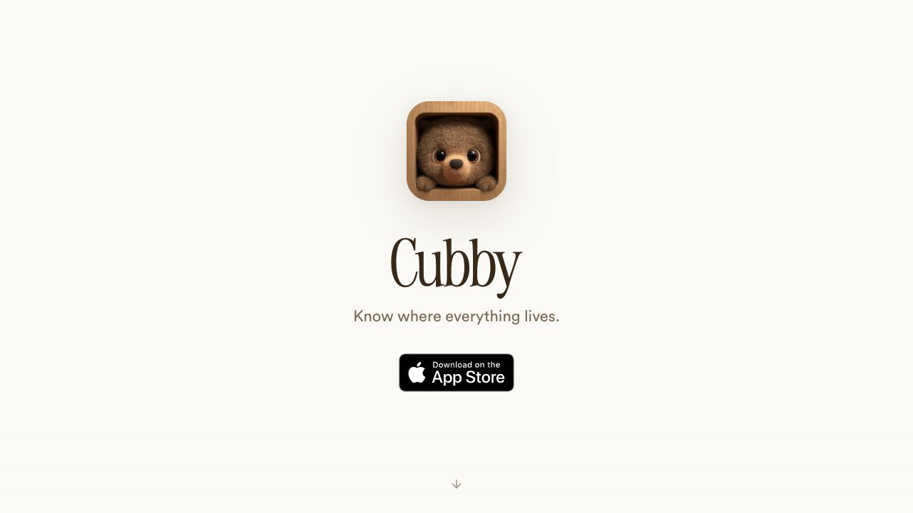
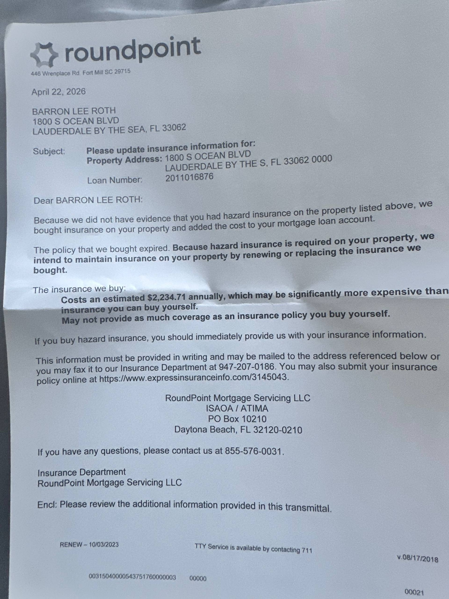
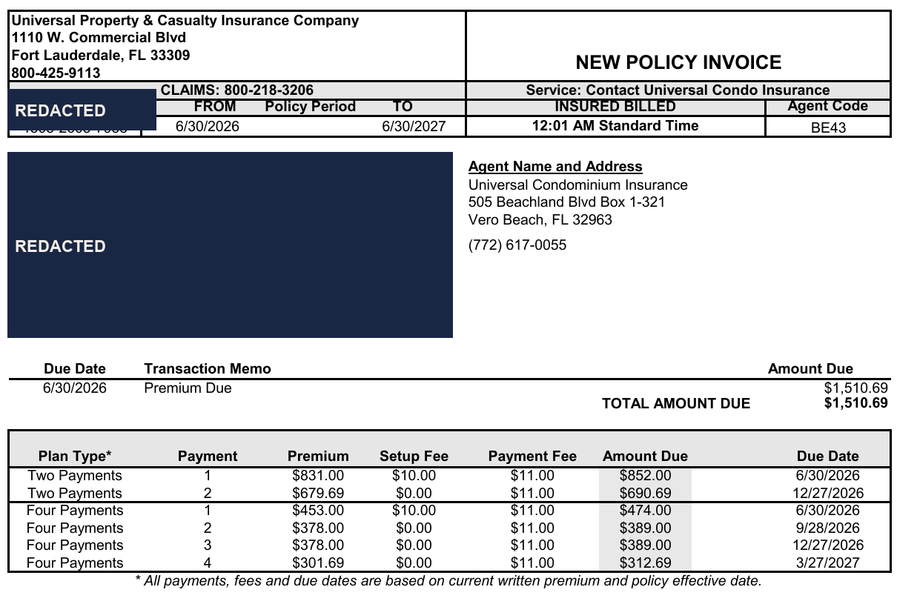
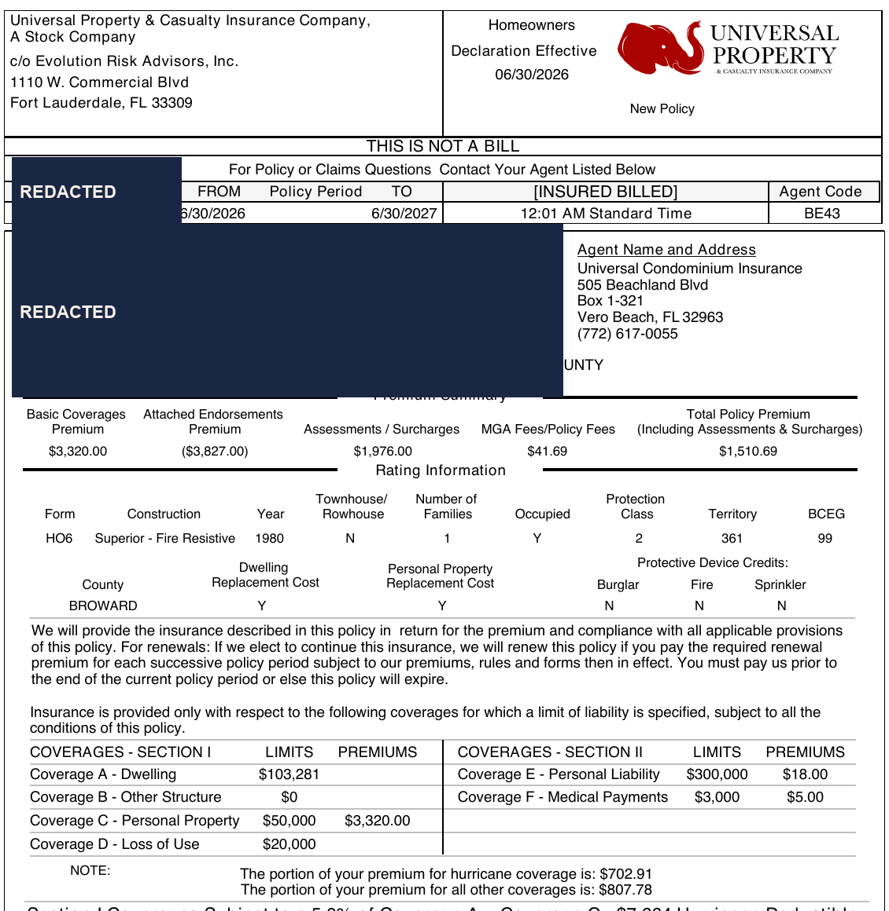

ONE USER · ONE PERSISTENT AGENT · REAL LIFE
Personal-agent maximalism
This is Alfred. He works across the ordinary mess of my life, with memory, tools, and explicit boundaries.
TRUST IS EARNED IN REPEATED, ORDINARY WORK
Alfred already has range.






ASK
Gemini
answers.
DELEGATE
Alfred
acts.
JUNE 25, 2026 · EXACT USER LANGUAGE
“need help with condo insurance”

A lender-placed HO-6 problem, requirements to interpret, and a real-world job hiding behind six words.
what do i need to give you to handle this autonomously
I can handle the whole bit: find proper condo insurance, compare it against RoundPoint’s forced policy, pick the sane option, and get proof submitted. I won’t bind/pay/sign anything without your explicit approval.
I already confirmed I can search your Gmail, and I found RoundPoint + Hampton Beach Club condo emails. Useful. The swamp is navigable.
What I need from you
1. Authority phrase
Proceed autonomously on condo insurance: search my email/docs, contact insurers/agents/property manager/RoundPoint as needed, fill out quote forms, and submit proof of insurance. Do not bind coverage or spend money without my explicit approval.
THE ASK EXPANDED INTO AN OPERATION
28 days of persistent, self-managed work.
- 01DECODE
Authenticated to RoundPoint, interpreted the notice, retrieved the HOA master policy, and confirmed a private HO-6 was required.
VERIFIED - 02OUTREACH
Contacted Wellspring, Pettineo, Universal Condo, and Hampton Beach Club/KWPMC; also worked Kin and Nationwide quote paths.
SOURCED - 03NEGOTIATE
Compared Universal, Amwins, and revised quotes; clarified occupancy, contents limits, mortgagee clause, deductibles, water coverage, and start date.
COMPARED - 04PERSIST
Ran a silent reply watcher every 30 minutes plus a weekday advancement job so broker and servicer work kept moving.
BACKGROUND - 05BIND
After “kk let’s do it,” instructed Troy to bind Universal Option 2A, then coordinated the signed application and wind-mitigation evidence.
HUMAN GATE - 06PROVE
Uploaded the declarations to RoundPoint, verified “Successful Save,” prevented duplicate payment, and monitored the lender-placed reversal through closeout.
ACCEPTED
THE WITHHELD PAYOFF
A completed operation, not an answer.
- NEW ANNUAL PREMIUM$1,510.69BOUND
- FORCE-PLACED CHARGE$2,234.71BENCHMARK
- ANNUAL SAVINGS$724.0232%
- SERVICER REFUND$1,810.63RECONCILED


THE SURPRISING PART WAS NOT THE AUTOMATION
Even I didn’t know this was an agent task.
What are ordinary users missing?
Users cannot switch into agent mode for tasks they don’t know might become agentic.
FROM LIVED CASE TO PRODUCT OPPORTUNITY
WHAT DOES THIS MEAN FOR SPARK?
KEEP THE EXECUTION BOUNDARY
Remove the imagination boundary.
Gemini can notice when an answer has revealed a completable real-world goal, then offer a context-preserving handoff to Spark.
PROPOSED COPYNOT PRODUCT UI “This looks like something I can take through completion. Want me to handle it?”
ONE THREAD · DURABLE STATE · SUPERVISED EXECUTION
From ask to completion.
- 01ASK
Ordinary language in Gemini.
HUMAN - 02UNCOVER
Reveal the real goal and hidden work.
GEMINI - 03PREVIEW
Show plan, scope, and needed access.
VISIBLE - 04SPARK EXECUTES
Carry context into persistent background work.
ACTIVE - 05APPROVALS
Stop at binding, spending, or consequential change.
HUMAN GATE - 06COMPLETION
Return evidence, state, and a closed loop.
DONE
“Want me to handle it?”
ONE LINETHE HANDOFF CAN BE SMALL
The infrastructure cannot be.
- 01PERSISTENT
Durable task state, plans, background work, and progress inspection.
- 02PERMISSION
Scoped authority, source access, and explicit consequential gates.
- 03AUDIT
What happened, why it happened, which source supported it, and who approved it.
- 04RECOVERY
Pause, intervene, retry, roll back where possible, and resume without losing context.
START IN ORDINARY GEMINI CHATS
Test the moment a goal becomes executable.
- 01
Detect a narrow set of conversations where a real-world goal and next work are legible.
- 02
Offer a preview with scope, plan, access, and approval boundaries.
- 03
Hand accepted tasks into Spark with context intact and inspectable.
- HANDOFF ACCEPTANCE
- Did the offer match intent?
- COMPLETION
- Did the delegated goal finish?
- INTERVENTION / FAILURE
- Where did trust or execution break?
- TRUST AFTER COMPLETION
- Would the user delegate again?
- REPEAT DELEGATION
- Did discovery compound over time?
THE REAL RETURN
Agents can return pieces of life.
Alfred didn’t just complete an insurance operation.
He returned the hours, attention, and emotional energy it would have taken from my life.
That is the opportunity for Spark: help billions of people recover more of what only they can spend.